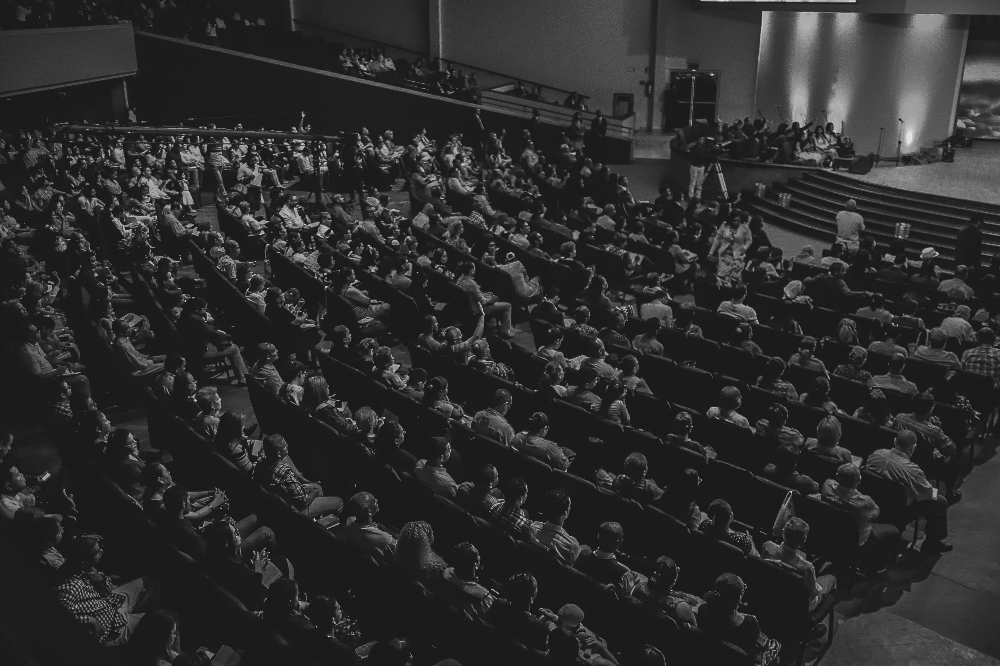

Información.
Los hechos constituyen el punto de partida. El contenido busca presentar información que permita comprender una empresa, una trayectoria, una decisión financiera o un fenómeno económico antes de extraer conclusiones sobre él.

Código Millonario es un medio digital de educación financiera y construcción de patrimonio.
El proyecto nació con el propósito de abordar el dinero, los negocios y las decisiones económicas desde una perspectiva práctica, realista y orientada al largo plazo.
Desde sus primeros contenidos, el medio ha buscado observar qué existe detrás de las cifras, las empresas, las grandes fortunas y las distintas trayectorias económicas que aparecen en el debate público.
Con el tiempo, Código Millonario ha ampliado su cobertura hacia la educación financiera, los negocios, el emprendimiento, la mentalidad, las grandes fortunas y las historias de empresarios que han construido patrimonio en diferentes contextos.
El propósito no es presentar una única ruta hacia la riqueza, sino estudiar las decisiones, circunstancias y modelos que intervienen en cada trayectoria y ofrecer al lector elementos para comprenderlos con mayor profundidad.
Código Millonario continúa desarrollándose como una publicación digital independiente, con una línea editorial centrada en información, contexto y análisis.
Código Millonario parte de una idea sencilla: comprender una decisión financiera, una empresa o una trayectoria económica requiere observar también el contexto en el que ocurrió.
Las historias relacionadas con dinero y riqueza suelen reducirse fácilmente a resultados llamativos. Nuestro enfoque busca ir más allá de esa superficie para examinar las decisiones, los antecedentes y las circunstancias que rodean cada caso.
La línea editorial combina información, contexto y análisis para distinguir entre los hechos conocidos, las condiciones que los rodean y la interpretación que puede hacerse de ellos.
Los hechos constituyen el punto de partida. El contenido busca presentar información que permita comprender una empresa, una trayectoria, una decisión financiera o un fenómeno económico antes de extraer conclusiones sobre él.
Una decisión rara vez puede entenderse de manera aislada. El momento económico, el mercado, los recursos disponibles y las circunstancias de cada época pueden cambiar por completo el significado de un resultado.
El propósito editorial no es convertir una experiencia particular en una fórmula universal. Es examinar las decisiones, los modelos y las circunstancias que rodean cada caso para identificar qué puede comprenderse de ellos.
Los principios editoriales de Código Millonario definen la manera en que el medio aborda el dinero, los negocios y la construcción de patrimonio.
No pretenden establecer una única forma de alcanzar el éxito económico. Su propósito es mantener una perspectiva que permita analizar estos temas con profundidad, contexto y sentido crítico.
Código Millonario busca mantener una separación clara entre el contenido editorial y los intereses comerciales. Las opiniones, análisis y contenidos informativos deben conservar su propia línea editorial.
Las historias relacionadas con dinero y riqueza pueden reducirse fácilmente a resultados llamativos. El trabajo editorial busca ir más allá de esa superficie, prestando atención a los antecedentes, las decisiones y las circunstancias que permiten comprender una trayectoria.
La construcción de patrimonio no se presenta como un acontecimiento instantáneo. El medio aborda el dinero desde una perspectiva que considera el tiempo, la acumulación, la adaptación y las decisiones que pueden influir en una trayectoria económica.
Los temas financieros y empresariales pueden ser complejos sin necesidad de convertirse en contenidos incomprensibles. La publicación busca explicar conceptos, modelos y acontecimientos con un lenguaje accesible, sin sacrificar la profundidad necesaria para comprenderlos.
Una misma decisión puede producir resultados diferentes dependiendo del momento, el mercado y las circunstancias. Por eso, el análisis editorial procura evitar conclusiones absolutas y reconocer los factores que hacen particular cada caso.

DIRECTOR EDITORIAL Y FUNDADOR
codigomillonarioblog@gmail.com
Fundador y Director Editorial de Código Millonario, responsable de la dirección editorial, el desarrollo de contenidos y la línea temática del medio.
Su trabajo se centra en negocios, ingresos, educación financiera, construcción de patrimonio y análisis de las decisiones que intervienen en distintas trayectorias económicas.
También es autor de publicaciones relacionadas con mentalidad, dinero y desarrollo personal.
Código Millonario reúne contenidos de diferentes áreas relacionadas con el dinero, los negocios y la construcción de patrimonio.
La cobertura busca conectar la educación financiera con el análisis de empresas, modelos de negocio, grandes fortunas y las decisiones que forman parte de diferentes trayectorias económicas.
Educación financiera, ingresos, ahorro, administración del dinero y construcción de patrimonio.
Modelos de negocio, emprendimiento, empresas, oportunidades y creación de valor.
Grandes fortunas, empresarios, fundadores y las historias detrás de diferentes formas de construir riqueza.
Hábitos, pensamiento estratégico y comportamientos relacionados con el dinero, los negocios y el patrimonio.
CÓDIGO MILLONARIO
“Ganar más dinero es la consecuencia de aprender a administrarlo mejor.”Medio Digital de Educación Financiera y Construcción de Patrimonio